9–19
☀️ Open Cultivation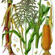
Warm season grass producing sweet corn cobs. Manning Pride is NSW-adapted variety. Plant in blocks for wind pollination. Excellent biomass from stalks after harvest.
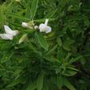
Fast-growing nitrogen-fixing tree lucerne reaching 5m. Excellent fodder and biomass for chop-and-drop. Tolerates poor soils and drought once established.

Red sweet capsicum. Allow to fully ripen on plant for sweetest flavor and highest vitamin C content.

Medium-hot jalapeño pepper. Thick-walled fruits good fresh, pickled or smoked (chipotle). Heavy producer.
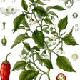
Medium-hot jalapeño pepper. Thick-walled fruits good fresh, pickled or smoked (chipotle). Heavy producer.

Fragrant Mediterranean shrub with purple flower spikes. Drought tolerant. Attracts bees and beneficial insects. Prune after flowering.
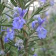
Aromatic Mediterranean shrub with needle-like leaves. Drought tolerant once established. Blue flowers attract bees.
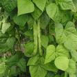
Bush bean varieties not requiring support. Fast growing nitrogen-fixer. Many varieties including Purple Beauty, Brown Beauty, Borlotti. Pick frequently to extend harvest.
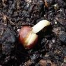
Cool season vegetable. Harvest main head then side shoots continue producing. Rich in vitamins and minerals.

Deep-rooted nutrient accumulator bringing minerals from subsoil. Excellent for chop-and-drop mulching - produces massive biomass. Cut 4-5 times per season.
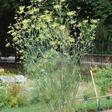
Aromatic herb with anise-flavored bulb, fronds and seeds. Florence fennel grown for bulb. Attracts beneficial insects. Self-seeds readily.

Scented leaf geranium with rose-like fragrance. Used for aromatics and pest management. Drought tolerant.
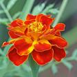
Companion plant repelling pests with strong scent. Root exudates suppress soil nematodes. Orange and yellow flowers attract pollinators. Easy annual.
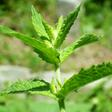
Vigorous spreading herb - best grown in containers to control spread. Fresh leaves for tea, cooking and drinks.
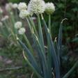
Bunching onion with mild flavor. Perennial in mild climates. Also called Welsh onion or scallion. Harvest whole or cut leaves repeatedly.
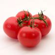
Heart-shaped heirloom tomato with meaty flesh. Excellent flavor for fresh eating. Indeterminate growth.
Syntropic agriculture mimics natural forest ecosystems by layering plants at different heights. Instead of clearing land for monocultures, we build stacked polycultures where every species has a role — fixing nitrogen, producing biomass, attracting pollinators, or feeding people.